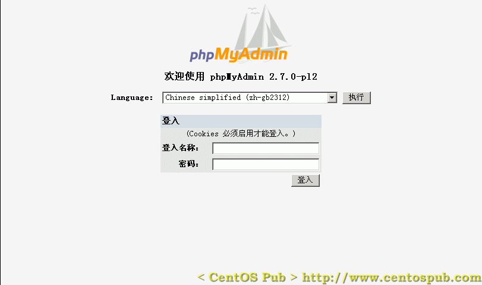

<<< 返回［配置详解］索引
< 用 phpMyAdmin 让 MySQL 数据库管理温和化 > （最近更新日：2006/08/31）
这里所说的“温和化”不如说成“大众化”…
这一节介绍通过phpMyAdmin这个工具实现用浏览器来管理服务器MySQL的方法。
但phpMyAdmin存在的意义只是为了让MySQL的管理变的让非专业人士更容易理解，其实质还是SQL命令的执行。在
构建MySQL数据库服务器中，对SQL命令的初级做了简单的演习。
前言以下灰字部分为选读，如您时间宝贵，不读也不会妨碍您phpMyAdmin的安装与配置。
操作系统的用户界面来说，可分为GUI方式（图形方式）和CUI方式（文字方式），习惯于装有Microsoft Windows操作系统PC的用户，基本上没什么机会接触到CUI，因为Windows下，大多数的工作可通过鼠标控制窗体的动作来完成。而Linux下 的X Window System也同Microsoft Windows一样提供给了用户一个GUI。无论CUI或GUI都无非为用户提供了一个用户与操作系统内核进行沟通的工具。但为何CUI依然无法被GUI 取代，笔者以为：第一，GUI方式操作的本质大多数还是由类似于CUI下命令在后台运行的方式来完成，也可以说CUI让用户离操作系统内核更近；第二，尤 其对于服务器来说，CUI显得高效与快捷--服务器的存在无非是为用户提供服务而存在，但如果GUI庞大的体积以及它消耗掉的巨大的系统资源，使的服务器 大部分的可利用资源用于系统本身组件（GUI）的运算而不是面对于反馈用户请求的运算，那服务器也就失去了大半的服务器的意义。这也是为什么本站介绍的所 有方法都是基于CUI方式的原因。而本节要介绍的phpMyAdmin也类似于MySQL的GUI--您可以通过浏览器来访问MySQL服务器，但笔者更 加推荐您通过服务器端的快捷的MySQL客户端以“CUI”的方式来管理您的数据库。
首先下载phpMyAdmin，并安装。
[root@sample ~]# wget http://jaist.dl.sourceforge.net/sourceforge/phpmyadmin/phpMyAdmin-2.7.0-pl2.tar.gz ← 下载phpMyAdmin（连续输入，无换行）
--04:24:57-- http://jaist.dl.sourceforge.net/sourceforge/phpmyadmin/phpMyAdmin-2.7.0-pl2.tar.gz
=> `phpMyAdmin-2.7.0-pl2.tar.gz.1'
Resolving jaist.dl.sourceforge.net... 150.65.7.130
Connecting to jaist.dl.sourceforge.net|150.65.7.130|:80... connected.
HTTP request sent, awaiting response... 200 OK
Length: 3,355,025 (3.2M) [application/x-gzip]
100%[====================================>] 3,355,025 274.27K/s ETA 00:00
04:25:07 (345.11 KB/s) - `phpMyAdmin-2.7.0-pl2.tar.gz.1' saved [3355025/3355025]
[root@sample ~]# tar zxvf phpMyAdmin-2.7.0-pl2.tar.gz ← 展开被压缩的tar文件
[root@sample ~]# mv phpMyAdmin-2.7.0-pl2/ /var/www/phpmyadmin ← 移动到相应目录下
[root@sample ~]# rm -f phpMyAdmin-2.7.0-pl2.tar.gz ← 删除遗留的源代码文件 |
然后，安装php-mbstring，让phpmyadmin能够正确识别字符串。
[root@sample ~]# yum -y install php-mbstring ← 在线安装php-mbstring
Setting up Install Process
Setting up repositories
dag 100% |=========================| 1.1 kB 00:00
update 100% |=========================| 951 B 00:00
base 100% |=========================| 1.1 kB 00:00
addons 100% |=========================| 951 B 00:00
extras 100% |=========================| 1.1 kB 00:00
Reading repository metadata in from local files
primary.xml.gz 100% |=========================| 25 kB 00:00
extras : ################################################## 98/98
Added 1 new packages, deleted 0 old in 0.48 seconds
Reducing Dag RPM Repository for Red Hat Enterprise Linux to included packages only
Finished
Parsing package install arguments
Resolving Dependencies
--> Populating transaction set with selected packages. Please wait.
---> Downloading header for php-mbstring to pack into transaction set.
php-mbstring-4.3.9-3.15.i 100% |=========================| 18 kB 00:00
---> Package php-mbstring.i386 0:4.3.9-3.15 set to be updated
--> Running transaction check
Dependencies Resolved
=============================================================================
Package Arch Version Repository Size
=============================================================================
Installing:
php-mbstring i386 4.3.9-3.15 base 920 k
Transaction Summary
=============================================================================
Install 1 Package(s)
Update 0 Package(s)
Remove 0 Package(s)
Total download size: 920 k
Downloading Packages:
(1/1): php-mbstring-4.3.9 100% |=========================| 920 kB 00:01
Running Transaction Test
Finished Transaction Test
Transaction Test Succeeded
Running Transaction
Installing: php-mbstring ######################### [1/1]
Installed: php-mbstring.i386 0:4.3.9-3.15
Complete!
|
然后配置phpMyAdmin。
[root@sample ~]# cp /var/www/phpmyadmin/config.default.php /var/www/phpmyadmin/config.inc.php
← 复制默认配置文件模板-->建立到应用配置文件config.inc.php
[root@sample ~]# chmod 660 /var/www/phpmyadmin/config.inc.php ← 改变其属性，使其具有可写性
[root@sample ~]# vi /var/www/phpmyadmin/config.inc.php ← 修改phpMyAdmin的配置文件
$cfg['blowfish_secret'] = '在此填入口令'; ← 找到此行，并设置相应的口令（这个口令只是程序内部使用，并非登录相关的口令。口令长度限制在46个字符以内。）
$cfg['Servers'][$i]['auth_type'] = 'config'; ← 找到此行，将“config”的值变为“cookie”
↓
$cfg['Servers'][$i]['auth_type'] = 'cookie'; ← 变为此状态，使认证方式为cookie方式
[root@sample ~]# chown -R root.apache /var/www/phpmyadmin/ ← 改变phpMyAdmin的归属 |
然后建立phpMyAdmin与Apache的联系。
[root@sample ~]# vi /etc/httpd/conf.d/phpmyadmin.conf ← 建立供Apache调用的phpMyAdmin配置文件如下：
Alias /phpmyadmin /var/www/phpmyadmin
下面的部分使得外网没有权限访问和使用phpmyadmin，如果允许外网用户，请不要填加如下部分到配置文件中
<Location /phpmyadmin>
Order deny,allow
Deny from all
Allow from 127.0.0.1
Allow from 192.168.0
</Location>
[root@sample ~]# /etc/rc.d/init.d/httpd restart ← 重新启动HTTP服务，使以上设置生效
Stopping httpd: [ OK ]
Starting httpd: [ OK ] |
注：以上<Location></Location>标签，如果在一些希望对外网用户开放phpMyAdmin的情况下请不要添加。这里处于安全考虑，只允许服务器本地及局域网用户访问phpMyAdmin。
然后，对phpMyAdmin进行一下简单的测试。
在浏览器中输入“http://服务器IP地址/phpmyadmin/”（局域网内的IP地址），如果出现如下画面，说明phpMyAdmin正在运行中。

要注意的是，浏览器的cookie功能要设置为接受的状态。
在使用中文版浏览器进行访问时，页面会默认成中文显示。如果默认不是中文，可以从language的选框中选择编码为GB2312的中文。这里以 MySQL服务器中的root用户进行登录为例（在MySQL服务器中建立的一般用户同样可以通过phpMyAdmin登录数据库服务器），截图如下：

以上，通过phpMyAdmin可以完成一些基本的数据库管理及数据库相关用户管理的操作。其本质，与通过SQL指令的方式无区别。